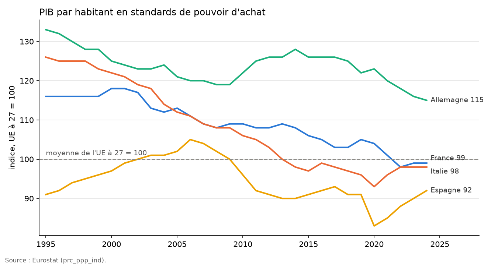

← Tous les thèmes · 13 sur 16
Europe et international
Le constat central est exact (la France est passée sous la moyenne européenne), mais il grossit le déclassement.
- ✓Exact 3
- !À nuancer 2
- ✕Inexact 1
6 affirmations · 9 sources
1Ce qu'il dit
Ses mots, avant toute vérification. Les étiquettes numérotées renvoient à l'affirmation vérifiée plus bas, sous le même numéro.
Diagnostic
Le déclassement de la France en Europe et dans le monde
- « la France vient de passer en richesse par habitant […] en dessous de la moyenne européenne », « la première fois dans notre histoire contemporaine » ;
- « derrière l'Italie en création de richesse par habitant » ;
- au « 7e rang de création de richesse par habitant il y a 30 ans », « au 27e rang » aujourd'hui.
Le retard européen de productivité
Qu'il impute à la sur-réglementation : « selon le rapport Draghi, cette seule divergence explique 70 % de l'écart de PIB par habitant entre l'Union européenne et les États-Unis ». L'UE aurait produit « 13 000 actes juridiques contraignants contre 5 500 aux États-Unis ».
Une défense sous-financée
« 57 milliards d'euros […] à peine 2 % de la richesse nationale » ; passer à 3 % coûterait « 27 milliards d'€ supplémentaires par an ».
La dépendance à la Chine
Un déficit commercial européen « record de 360 milliards d'euros en 2025 », « 100 % des terres rares lourdes ».
L'Europe et la souveraineté
- critique de la « surtransposition » des normes ;
- critique du « Green Deal », « voulu en 2019 par la France » ;
- critique de la primauté des jurisprudences européennes (la Cour européenne des droits de l'homme et la Cour de justice de l'UE). Il propose de réviser l'article 55 de la Constitution : ce point est traité dans le thème 14, institutions.
Mesures proposées
| Mesure | Ce qu'il en dit | Vérifié plus bas |
|---|---|---|
| Porter l'effort de défense vers 3 % du PIB | « objectif minimal pour tenir les ambitions annoncées » | — |
| Mettre fin à la surtransposition des directives | « décisions prises loin du terrain » | — |
| Faire primer la loi française sur les jurisprudences européennes | révision de l'article 55 de la Constitution (thème 14) | — |
2Ce que disent les chiffres
Une carte par affirmation : l'étiquette dit en quoi la phrase s'écarte des chiffres, la ligne en dessous dit pourquoi. Ouvrir une carte pour lire la citation exacte, l'explication, le calcul et les sources.
1✓Exact« La France vient de passer en richesse par habitant, c'est la première fois dans notre histoire contemporaine […] en dessous de la moyenne européenne » (CNews, 28/10/2026)En pouvoir d'achat, le PIB par habitant de la France est passé sous la moyenne de l'UE en 2022, pour la première fois depuis le début de la série en 1995.
« la France vient de passer en richesse par habitant, c'est la première fois dans notre histoire contemporaine, c'est très important, pardonnez-moi de le dire, en dessous de la moyenne européenne. »
David Lisnard, youtube : David Lisnard face à Laurence Ferrari dans l'émission Objectif Élysée 2027, 28 octobre 2026
✓Exact
Confirmé par les données publiques.
Exact Confiance : forte
Pourquoi
- En SPA (standards de pouvoir d'achat), le PIB par habitant de la France est à 98 en 2022, puis à 99 en 2023 et en 2024, pour une moyenne de l'UE à 27 de 100.
- De 1995 à 2021, il n'était jamais descendu sous 101. Il valait 116 à 118 à la fin des années 1990.
- « Vient de passer » est un peu daté : le passage sous la moyenne date de 2022, comme il l'écrit lui-même ailleurs (« depuis 2022 »). L'écart reste faible (1 à 2 points) et sujet à révision. Mais la tendance, une baisse continue depuis 2000, est nette.

Ses autres formulations (1)
- « Depuis 2022, notre PIB par habitant est passé sous la moyenne de l'Union européenne » (Livre noir de la bureaucratie, 2026 ; discours du 22/04/2026)
Le calcul
PIB par habitant par rapport à l'UE
- Entrée :
EUROSTAT-PIB-HAB-SPA: PIB par habitant en standards de pouvoir d'achat (SPA), indice UE à 27 = 100, de 1995 à 2024. - Calculs :
- minimum de l'indice français de 1995 à 2021 ;
- valeurs de 2022 à 2024 ;
- écart France − Italie, en points.
- Limite : Eurostat arrondit l'indice à l'unité et le révise chaque année. Un écart d'un point entre deux pays n'est pas significatif.
Résultats du calcul
Ce qu'il dit : « en dessous de la moyenne européenne »
| Mesure | Cas | Valeur | Remarque |
|---|---|---|---|
| Plus bas indice de la France avant 2022 (UE = 100) | 1995-2021 | 101,0 indice | la série commence en 1995 |
| PIB par habitant de la France en SPA (UE = 100) | 2022 | 98,0 indice | |
| PIB par habitant de la France en SPA (UE = 100) | 2023 | 99,0 indice | |
| PIB par habitant de la France en SPA (UE = 100) | 2024 | 99,0 indice |
Les sources (1)
- AEurostat · PIB par habitant en standards de pouvoir d'achat, indice UE à 27 = 100 (prc_ppp_ind) · relevé le 14/11/2026 ·
EUROSTAT-PIB-HAB-SPA
2✕Erreur de fait« On vient de passer derrière l'Italie en création de richesse par habitant » (26/06/2025)France et Italie étaient à égalité en 2022. La France est repassée devant d'un point en 2023 et en 2024.
« On vient de passer derrière l’Italie en création de richesse par habitant »
David Lisnard, articles : « Le chef de l’État doit prendre acte de son échec », 26 juin 2025 · voir la source
✕Erreur de fait
Les données publiques disent autre chose.
Inexact Confiance : moyenne
- Données publiques
- Point de comparaison
Pourquoi
- Selon les données actuelles d'Eurostat, la France et l'Italie sont à égalité en 2022 (98). La France repasse devant d'un point en 2023 et en 2024 (99 contre 98).
- L'Italie a beaucoup rattrapé son retard depuis 2020. La France n'est pas pour autant passée derrière.
- Un écart d'un point est dans la marge des révisions. Les données disponibles en juin 2025 ont pu donner un classement différent, ce qui n'a pas été vérifié ici.
Le calcul
PIB par habitant par rapport à l'UE
- Entrée :
EUROSTAT-PIB-HAB-SPA: PIB par habitant en standards de pouvoir d'achat (SPA), indice UE à 27 = 100, de 1995 à 2024. - Calculs :
- minimum de l'indice français de 1995 à 2021 ;
- valeurs de 2022 à 2024 ;
- écart France − Italie, en points.
- Limite : Eurostat arrondit l'indice à l'unité et le révise chaque année. Un écart d'un point entre deux pays n'est pas significatif.
Résultats du calcul
Ce qu'il dit : « derrière l'Italie »
| Mesure | Cas | Valeur | Remarque |
|---|---|---|---|
| PIB par habitant en SPA (UE = 100) : France moins Italie | 2022 | 0,0 points | France 98, Italie 98 |
| PIB par habitant en SPA (UE = 100) : France moins Italie | 2023 | 1,0 points | France 99, Italie 98 |
| PIB par habitant en SPA (UE = 100) : France moins Italie | 2024 | 1,0 points | France 99, Italie 98 |
Les sources (1)
- AEurostat · PIB par habitant en standards de pouvoir d'achat, indice UE à 27 = 100 (prc_ppp_ind) · relevé le 14/11/2026 ·
EUROSTAT-PIB-HAB-SPA
3!Chiffre grossi« On était au 7e rang de création de richesse par habitant il y a 30 ans, […] on est au 27e rang » (franceinfo, 24/09/2025)La France est bien 27e en 2024, mais elle était 13e en 1995, pas 7e. Le recul est réel ; il le fait paraître deux fois plus fort.
« on était au 7e rang de création de richesse par habitant il y a 30 ans, qu'on est au 27e rang »
David Lisnard, entretien, franceinfo, 24 septembre 2025 · voir la source
!Chiffre grossi
La réalité va dans le même sens, mais le chiffre réel est nettement plus faible.
À nuancer Confiance : forte
Pourquoi
- En dollars courants (FMI, tous pays), la France est bien 27e en 2024 (26e en 2025). Mais elle était 13e en 1995, pas 7e.
- Aucun des quatre classements calculés ne la place 7e en 1995 :
- hors pays de moins d'un million d'habitants : 11e en 1995, 20e à 21e aujourd'hui ;
- en parité de pouvoir d'achat : 21e en 1995, 30e aujourd'hui (16e et 22e hors petits pays).
- Le nombre de pays classés est passé de 175 à 195. Une partie du recul de rang tient donc à des pays nouvellement mesurés.
- Le recul est réel, mais il le fait paraître deux fois plus fort qu'il n'est. Sa version du Livre noir (« 11e dans les années 80 […] 24e ») est plus proche des données : 12e en 1980 en dollars courants.
Ses autres formulations (2)
- « Dans les années 80, la France affichait le 11ème PIB par habitant du monde, devant les États-Unis. Quarante ans plus tard, elle est au 24e rang » (Livre noir, 2026)
- « la septième puissance en production de richesse par habitant […] aujourd'hui au vingt-septième rang » (discours, 25/09/2026)
Le calcul
Rang mondial de la France
- Entrées :
FMI-PIB-HAB-DOLLARS(PIB par habitant en dollars courants) etFMI-PIB-HAB-PPA(en parité de pouvoir d'achat), base WEO ;FMI-POPULATION;FMI-PAYS(liste des pays, qui sert à exclure les regroupements régionaux).
- Calcul : on classe les pays par PIB par habitant décroissant et on lit le rang de la France en 1980, 1995, 2024 et 2025. Deux classements : tous les pays, puis seulement les pays de plus d'un million d'habitants (le classement « tous pays » place devant la France des micro-États comme le Luxembourg, Macao ou Saint-Marin).
- Limite : le nombre de pays classés augmente avec le temps (137 en 1980, 195 en 2025). Une partie du recul de rang tient donc à l'entrée de nouveaux pays dans les données.
Résultats du calcul
Ce qu'il dit : 7e il y a 30 ans, 27e aujourd'hui
| Mesure | Cas | Valeur | Remarque |
|---|---|---|---|
| Rang mondial de la France pour le PIB par habitant | en dollars courants, tous pays, 1980 | 12,0 rang | sur 137 pays classés |
| Rang mondial de la France pour le PIB par habitant | en dollars courants, tous pays, 1995 | 13,0 rang | sur 175 pays classés |
| Rang mondial de la France pour le PIB par habitant | en dollars courants, tous pays, 2024 | 27,0 rang | sur 195 pays classés |
| Rang mondial de la France pour le PIB par habitant | en dollars courants, tous pays, 2025 | 26,0 rang | sur 195 pays classés |
| Rang mondial de la France pour le PIB par habitant | en dollars courants, pays de plus d'un million d'habitants, 1980 | 9,0 rang | sur 106 pays classés |
| Rang mondial de la France pour le PIB par habitant | en dollars courants, pays de plus d'un million d'habitants, 1995 | 11,0 rang | sur 142 pays classés |
| Rang mondial de la France pour le PIB par habitant | en dollars courants, pays de plus d'un million d'habitants, 2024 | 21,0 rang | sur 156 pays classés |
| Rang mondial de la France pour le PIB par habitant | en dollars courants, pays de plus d'un million d'habitants, 2025 | 20,0 rang | sur 157 pays classés |
| Rang mondial de la France pour le PIB par habitant | en parité de pouvoir d'achat, tous pays, 1980 | 19,0 rang | sur 138 pays classés |
| Rang mondial de la France pour le PIB par habitant | en parité de pouvoir d'achat, tous pays, 1995 | 21,0 rang | sur 174 pays classés |
| Rang mondial de la France pour le PIB par habitant | en parité de pouvoir d'achat, tous pays, 2024 | 30,0 rang | sur 195 pays classés |
| Rang mondial de la France pour le PIB par habitant | en parité de pouvoir d'achat, tous pays, 2025 | 30,0 rang | sur 195 pays classés |
| Rang mondial de la France pour le PIB par habitant | en parité de pouvoir d'achat, pays de plus d'un million d'habitants, 1980 | 14,0 rang | sur 106 pays classés |
| Rang mondial de la France pour le PIB par habitant | en parité de pouvoir d'achat, pays de plus d'un million d'habitants, 1995 | 16,0 rang | sur 141 pays classés |
| Rang mondial de la France pour le PIB par habitant | en parité de pouvoir d'achat, pays de plus d'un million d'habitants, 2024 | 21,0 rang | sur 156 pays classés |
| Rang mondial de la France pour le PIB par habitant | en parité de pouvoir d'achat, pays de plus d'un million d'habitants, 2025 | 22,0 rang | sur 157 pays classés |
Les sources (4)
- AFonds monétaire international · Liste des pays du datamapper (pour exclure les regroupements) · relevé le 14/11/2026 ·
FMI-PAYS - AFonds monétaire international (WEO) · PIB par habitant en dollars courants, tous pays (NGDPDPC) · relevé le 14/11/2026 ·
FMI-PIB-HAB-DOLLARS - AFonds monétaire international (WEO) · PIB par habitant en parité de pouvoir d'achat, tous pays (PPPPC) · relevé le 14/11/2026 ·
FMI-PIB-HAB-PPA - AFonds monétaire international (WEO) · Population, tous pays (LP, millions) · relevé le 14/11/2026 ·
FMI-POPULATION
4✓Exact« Selon le rapport Draghi, cette seule divergence explique 70 % de l'écart de PIB par habitant entre l'Union européenne et les États-Unis » (15/05/2026)Le rapport Draghi écrit bien qu'environ 70 % de l'écart de PIB par habitant avec les États-Unis s'explique par une productivité plus faible.
« Selon le rapport Draghi, cette seule divergence explique 70 % de l’écart de PIB par habitant entre l’Union européenne et les États-Unis. »
David Lisnard, articles : « La réindustrialisation est une priorité nationale », 15 mai 2026 · voir la source
✓Exact
Confirmé par les données publiques.
Exact Confiance : forte
Pourquoi
- Le rapport Draghi (partie A) écrit : « Around 70% of the gap in per capita GDP with US at PPP is explained by lower productivity in the EU ».
- La phrase précédente de Lisnard (zone euro à « 98 % » de la productivité horaire américaine en 1995, « 82 % » en 2019) ne reprend pas les chiffres de Draghi : l'UE à 95 % en 1995, puis « en dessous de 80 % ». Elle vient d'une autre source, non identifiée. Le sens est le même.
Ses autres formulations (1)
- « La productivité horaire de la zone euro, qui atteignait 98 % de celle des États-Unis en 1995, n'en représentait plus que 82 % en 2019 » (même texte)
Le calcul
Rapport Draghi
- Entrée :
DRAGHI-2024-A, partie A du rapport :- « Around 70% of the gap in per capita GDP with US at PPP is explained by lower productivity in the EU » ;
- productivité du travail de l'UE à 95 % du niveau américain en 1995, puis « below 80% ».
- Aucun calcul.
Résultats du calcul
Ce qu'il dit : 70 %
| Mesure | Cas | Valeur | Remarque |
|---|---|---|---|
| Part de l'écart de PIB par habitant UE / États-Unis (PPA) expliquée par la productivité | rapport Draghi, partie A | 70,0 % | productivité du travail de l'UE : 95 % du niveau américain en 1995, moins de 80 % aujourd'hui |
Les sources (1)
- ACommission européenne (rapport de M. Draghi) · The future of European competitiveness, partie A : stratégie de compétitivité (septembre 2024) · relevé le 14/11/2026 ·
DRAGHI-2024-A
5✓Exact« La France consacre 57 milliards d'euros à sa défense, soit à peine 2 % de la richesse nationale » (L'Opinion, 06/03/2026)57 Md€ représentent 1,9 % du PIB de 2025, et 2,05 % avec la définition plus large de l'OTAN.
« Aujourd’hui, la France consacre 57 milliards d’euros à sa défense, soit à peine 2 % de la richesse nationale. »
David Lisnard, articles : Dissuasion nucléaire : ce que le discours du président de la République dit et ce qu’il ne, 6 mars 2026 · voir la source
✓Exact
Confirmé par les données publiques.
Exact Confiance : forte
Pourquoi
- 57 Md€ représentent 1,9 % du PIB de 2025. Avec la définition plus large de l'OTAN, la France dépense 61,8 Md€ en 2025, soit 2,05 % du PIB.
- Ses calculs du 03/03/2026 sont justes :
- passer de 2,06 % à 3 % du PIB coûterait 28 Md€ par an (il dit 27) ;
- passer à 3,5 % coûterait 43 Md€ (« plus de 40 »).
Ses autres formulations (1)
- « Passer de 2,06 % à 3 % du PIB consacré à la défense […] représente 27 milliards d'€ supplémentaires par an. Atteindre 3,5 %, c'est plus de 40 milliards/an » (X, 03/03/2026)
Le calcul
Dépenses de défense
- Entrées :
OTAN-DEPENSES-2025: dépenses de défense de la France en millions d'euros courants (tableau 1) et en % du PIB (tableau 3), estimations pour 2024 et 2025 ;EUROSTAT-PIB-COURANT: PIB de la France en 2025.
- Calculs :
- 57 / PIB 2025 ;
- coût de la hausse de 2,06 % à 3 % (et à 3,5 %) = écart de taux × PIB 2025.
- Limite : la définition de l'OTAN, qui inclut notamment les pensions et la gendarmerie en opérations, donne un montant plus élevé que le budget des armées de la loi de finances.
Résultats du calcul
Ce qu'il dit : 57 Md€ · « à peine 2 % » · 27 Md€ par an · plus de 40 Md€ par an
| Mesure | Cas | Valeur | Remarque |
|---|---|---|---|
| Dépenses de défense de la France (définition OTAN) | OTAN, estimation 2025 | 61,78 Md€ | 2.05 % du PIB ; 2024 : 59.6 Md€ |
| Part du PIB | 57 Md€ / PIB 2025 | 1,91 % | |
| Dépense supplémentaire annuelle | de 2,06 % à 3.0 % du PIB 2025 | 28,12 Md€ | PIB 2025 : 2991 Md€ |
| Dépense supplémentaire annuelle | de 2,06 % à 3.5 % du PIB 2025 | 43,07 Md€ | PIB 2025 : 2991 Md€ |
Les sources (2)
- AEurostat · PIB de la France en euros courants (nama_10_gdp, CP_MEUR) · relevé le 14/11/2026 ·
EUROSTAT-PIB-COURANT - AOTAN · Defence expenditure of NATO countries (2014-2025), communiqué du 27 août 2025 · relevé le 14/11/2026 ·
OTAN-DEPENSES-2025
6!Superlatif« Le déficit commercial de l'Union européenne avec Pékin a atteint le niveau record de 360 milliards d'euros en 2025 » (29/06/2026)Le déficit est de 375 Md€ en 2025, mais ce n'est pas un record : celui de 2022 était de 398 Md€.
« Le déficit commercial de l’Union européenne avec Pékin a atteint le niveau record de 360 milliards d’euros en 2025. »
David Lisnard, articles : Le Grand Entretien avec David Lisnard – Quelle stratégie pour la France dans le nouveau dé, 29 juin 2026 · voir la source
!Superlatif
« Record », « premier », « dernier » : la France est bien ou mal placée, mais pas à la place annoncée.
À nuancer Confiance : forte
- Ce qu'il annonce
- Données publiques
Pourquoi
- Selon Eurostat (Comext), le déficit de l'UE avec la Chine est de 375 Md€ en 2025. Le record est celui de 2022 : 398 Md€, l'année de la flambée des prix et des importations.
- Le déficit est très élevé et repart à la hausse depuis 2023 (300 Md€), mais 2025 n'est pas un record.
Le calcul
Commerce de l'UE avec la Chine
- Entrée :
COMEXT-UE-CHINE: importations (flux 1) et exportations (flux 2) de l'UE avec la Chine, tous produits, de 2010 à 2025. - Calculs : solde = exportations − importations ; année du solde le plus négatif.
Résultats du calcul
Ce qu'il dit : −360 Md€, « record »
| Mesure | Cas | Valeur | Remarque |
|---|---|---|---|
| Solde commercial de l'UE avec la Chine | 2025 | −374,96 Md€ | |
| Solde commercial de l'UE avec la Chine, année la plus déficitaire | record de la série | −397,79 Md€ | série 2010-2025 |
Les sources (1)
- AEurostat (Comext) · Commerce de l'UE avec la Chine, tous produits (ds-045409) · relevé le 14/11/2026 ·
COMEXT-UE-CHINE
3Conclusion
Le constat central de Lisnard est exact : le PIB par habitant de la France, mesuré en pouvoir d'achat, est passé sous la moyenne de l'UE en 2022, pour la première fois depuis le début de la série (1995). Le rapport Draghi dit bien ce qu'il lui fait dire, et ses calculs sur la défense sont justes.
Il grossit en revanche le déclassement :
- la France n'est pas passée derrière l'Italie ;
- elle n'était pas 7e mondiale il y a trente ans, mais 11e à 13e ;
- le déficit commercial de l'UE avec la Chine de 2025 n'est pas un record (2022 était pire).
Conventions de calcul
Résultats produits par calculer.py à partir de brut/ (catalogue sources.csv), dans resultats.csv. Les chiffres lus dans les PDF sont dans LUS, avec la phrase exacte vérifiée. Données téléchargées le 14/11/2026. Graphique : graphiques/pib_par_habitant_spa.png.
Toutes les sources du thème (9)
A Statistique publique (Insee, Eurostat, OCDE, ministères…)
- ACommission européenne (rapport de M. Draghi) · The future of European competitiveness, partie A : stratégie de compétitivité (septembre 2024) · relevé le 14/11/2026 ·
DRAGHI-2024-A - AEurostat · PIB de la France en euros courants (nama_10_gdp, CP_MEUR) · relevé le 14/11/2026 ·
EUROSTAT-PIB-COURANT - AEurostat · PIB par habitant en standards de pouvoir d'achat, indice UE à 27 = 100 (prc_ppp_ind) · relevé le 14/11/2026 ·
EUROSTAT-PIB-HAB-SPA - AEurostat (Comext) · Commerce de l'UE avec la Chine, tous produits (ds-045409) · relevé le 14/11/2026 ·
COMEXT-UE-CHINE - AFonds monétaire international · Liste des pays du datamapper (pour exclure les regroupements) · relevé le 14/11/2026 ·
FMI-PAYS - AFonds monétaire international (WEO) · PIB par habitant en dollars courants, tous pays (NGDPDPC) · relevé le 14/11/2026 ·
FMI-PIB-HAB-DOLLARS - AFonds monétaire international (WEO) · PIB par habitant en parité de pouvoir d'achat, tous pays (PPPPC) · relevé le 14/11/2026 ·
FMI-PIB-HAB-PPA - AFonds monétaire international (WEO) · Population, tous pays (LP, millions) · relevé le 14/11/2026 ·
FMI-POPULATION - AOTAN · Defence expenditure of NATO countries (2014-2025), communiqué du 27 août 2025 · relevé le 14/11/2026 ·
OTAN-DEPENSES-2025